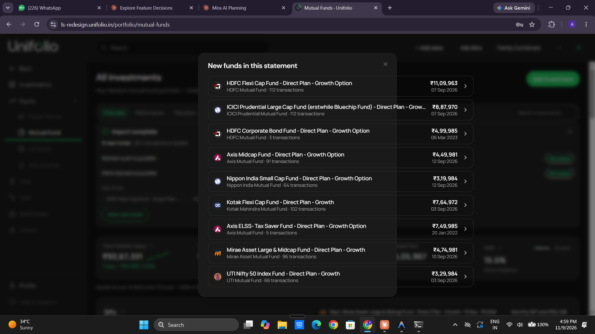

| Item | Detail |
|---|---|
| Performed by | Aditi (intern) |
| Date | 9 November 2026 (screenshot taken 4:59 PM, local time) |
| Site under test | https://ls-redesign.unifolio.in |
| Browser and device | Google Chrome on a Windows desktop, 1920 x 1080 screen |
| Code under test | Deploy confirmed by the tester. Alembic head is 0053, as expected (no migration in this release). The deployed commit was not supplied; to be added from the manager's Claude deploy report. |
| Sheet used | Staging QA checklist: the QA fixes (6 Nov 2026), sections A, B, D and R. |
No row failed. All 36 rows in sections A, B and D and all five regression rows (R1 to R5) were marked Pass. Four rows carry a note (a UI defect, two behaviour defects and a copy request), listed in section 3. Nothing is blocked or skipped.
| Measure | Count | Comment |
|---|---|---|
| Rows reported Pass | 41 | A1.1 to A1.6, A2.1 to A2.3; B1.1 to B1.4, B2.1 to B2.3, B3.1 to B3.6; D1.1 to D1.5, D2.1, D3.1, D3.2, D4.1 to D4.3, D5.1 to D5.3; R1 to R5. |
| Rows reported Fail | 0 | None. |
| Passed with a note | 4 notes | A1.2, D1.2, D2.1, D5.1 to D5.3. Two of them (A1.2 and D1.2) describe a visible defect in a new or changed screen. |
| Not run | 0 | None. |
| Area (checklist rows) | What was checked | Result | Notes |
|---|---|---|---|
| Import complete card (A1.1 to A1.6) | Card layout, View new funds pop-up, skipped-line notes, repeated statement, dismiss, no auto-hide | Pass | A1.2 passed with a note: the fund rows overflow the pop-up (finding 1). After import from Home the user lands on the Investments page (finding 2). |
| Home donut (A2.1 to A2.3) | Slice and legend hover highlight, click, keyboard | Pass | |
| Sign-up errors and log-in errors (B1.1 to B1.4) | Readable red error boxes, red outlines, wrong and expired code, dark mode | Pass | |
| Log out and return (B2.1 to B2.3) | Landing page after log-in, deep link, expired session | Pass | B2.2: opening a page link while signed out showed the sign-in page (the expected first step). |
| All set, View details, Back (B3.1 to B3.6) | Import details dialog, Back, browser Back, Esc, reload, Go to my dashboard, Import History Back, new-funds Back | Pass | |
| Head of Family, member selection (D1.1 to D1.5) | Add details row, Complete profile dialog, Exit, greyed members, email warnings | Pass | D1.2 passed with a note: an "Import complete" pop-up with a Go to dashboard button appears (finding 3). |
| Head of Family, review step (D2.1) | Headline, sign-in block, what changes, sign-out notice, Confirm disabled until loaded | Pass | Note: Enter does not submit the Verify or Continue buttons (finding 4). |
| Head of Family, after confirm (D3.1, D3.2) | Signed out, masked card on the sign-in page, card not stored | Pass | |
| Deletion refusals (D4.1 to D4.3) | Member removal and account deletion refused with an IST date; ordinary delete still works | Pass | |
| Head of Family emails (D5.1 to D5.3) | Three emails, undo, dark mode | Pass | Note: all the wording needs to be rewritten (finding 5). Undo (D5.2) was reported as passing. |
| Nothing else moved (R1 to R5) | Home, Overview, Holdings, Allocation, Profile, sign-up and log-in screens, import options, mobile | Pass |
All five items are the tester's own notes. The priority and owner columns are suggestions from the person who prepared this report, for the manager to confirm.
| # | Row | What was seen | Suggested priority | Suggested owner | Evidence |
|---|---|---|---|---|---|
| 1 | A1.2 | In the View new funds pop-up, the fund cards bleed out of the dialog. The dialog is narrower than the list inside it, so the right-hand part of every card (amount, date, arrow) sits outside the dialog border. The tester says the UI needs to be improved. The checklist expects a pop-up that holds the list. | Medium (new feature, clearly visible) | Front end (new-funds pop-up) | Screenshot 1 |
| 2 | A1.1 | The tester added data from the Home page; after the import finished they landed on the Investments (Mutual Funds) page. The tester says this is fine. | Low (confirm whether intended) | Product | None |
| 3 | D1.2 | After saving the missing details for a member in the Change Head of Family flow, the "Details completed" dialog is followed by a second pop-up titled "Import complete" with a "Go to dashboard" button, visible for about one to two seconds. Clicking it takes the user straight to the dashboard and out of the Head of Family flow. Expected: only the "Details completed" pop-up, without a Go to dashboard button, when it opens from Family. The button belongs only to the sign-up finish screen. | Medium (can break the flow) | Front end (Complete profile dialog) | None; please add a screenshot or recording |
| 4 | D2.1 | On the code steps of the Head of Family change, the user has to click Verify or Continue each time. Pressing Enter does nothing. The tester wants Enter to work as well as clicking the button. | Low to medium (keyboard use, accessibility) | Front end (code step form) | None |
| 5 | D5.1 to D5.3 | The three Head of Family emails passed their checks. The tester says the wording is correct but all of it needs to be changed, and it should be discussed with Surve and then updated. | Low to medium (copy) | Product (copy), then back end (email templates) | None |
| Item | Why | What is needed |
|---|---|---|
| Deployed commit | The tester reports the deploy as confirmed and the Alembic head as 0053, but the commit was not given. | Add it from the manager's Claude deploy report. |
| Checklist sign-off line | Not for the tester to sign. | The owner signs the checklist. |

Functionally the release passed this QA run: no row failed. Sign-off by the owner should wait for the points below.
Prepared from the tester's results (Aditi, intern) and one screenshot. Priorities and owners in section 3 are suggestions, not decisions.